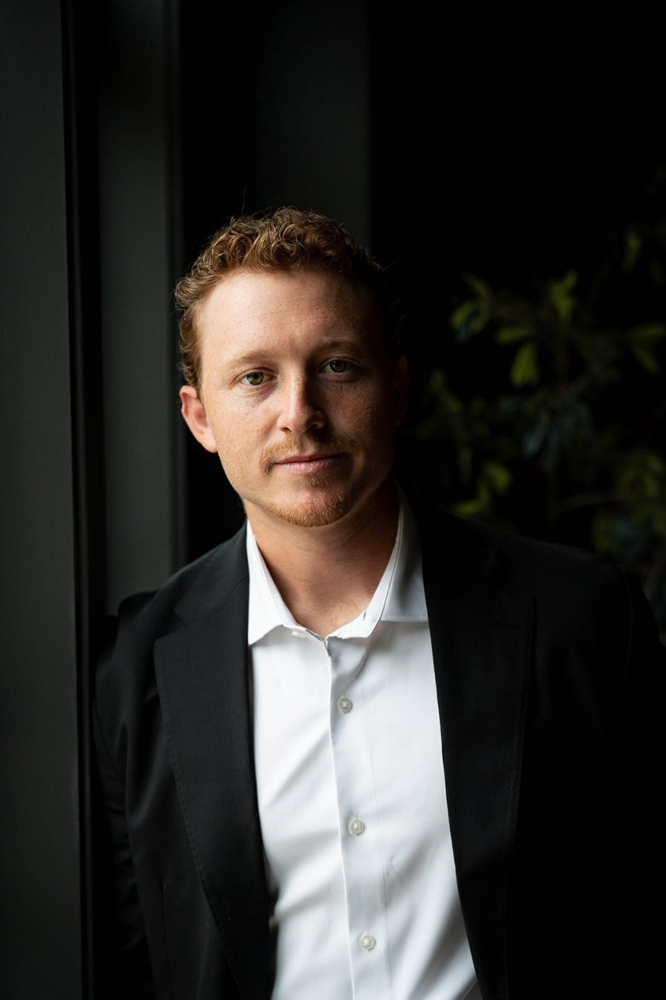

We are builders' people. We find land, guide custom homes from plans to keys and sell what gets built, so we understand a property from the dirt up and know what it is really worth.
That changes how we sell. Every home gets a real plan, a real production and a team that picks up the phone day or night. From groundbreaking to housewarming, you deal with the same two people.
Why it matters
Live Oak Reserve is a team at Brokerage. Being part of a larger firm gives our clients a wider network of buyers and agents, and the resources to market a home properly, while you still work directly with us.
Off-market access
Homes marketed privately inside the firm's network before they reach the MLS, and a way to place yours there.
Local depth
Agents and relationships across Travis, Williamson and Hays counties, so the right buyers hear about a home first.
National reach
A network for buyers relocating to Austin and owners selling from out of state.
Gabe Jeudy-Lally
Gabe grew up in Texas and made the Tennessee Titans as an undrafted free agent, earning a spot on the 53-man roster two seasons running as a cornerback. Corners live on film study and quick reads, and he brings the same habits to every deal: do the homework, see it coming, stay calm when it gets tight.
He graduated from Vanderbilt and earned a master's degree from the University of Tennessee, then built his real estate career alongside Ryan Stonehouse in Nashville, working across land, development and luxury sales. He founded Victory Formation Ventures to bring that model home to Austin and the Texas Hill Country.

Ryan Stonehouse
Ryan played four NFL seasons as a punter, with the Tennessee Titans and the Miami Dolphins. After football he went straight into real estate, starting on the development side and learning homes from the land up before moving into luxury sales.
He founded The Stonehouse Company in Nashville, where he leads land acquisition, development, custom home representation and luxury sales, with a practice built around new construction and the land it sits on. He is a partner in Victory Formation Ventures and works alongside Gabe on every Live Oak engagement.